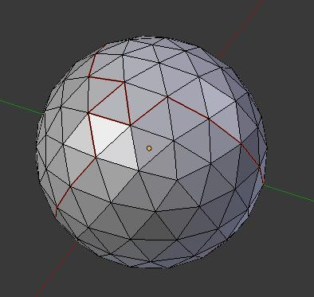
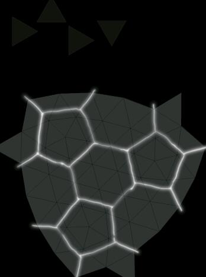
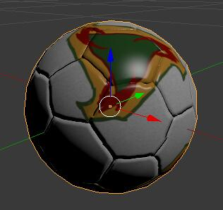
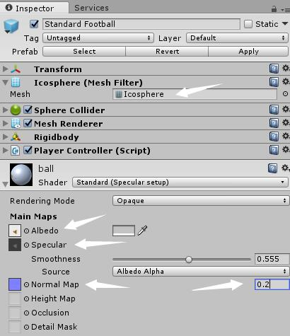
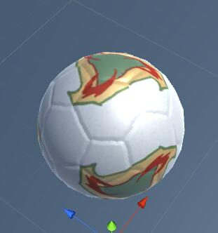

Make yourself a Ferenova
Ferenova is the official ball of FIFA World Cup 2002.

I like its design very much. Below are the steps I took to make it available in Unity3D.
Detailed steps
-
(Blender) create an icosphere

-
Cut seams for UV unwrapping

-
Unwrap

-
Paint the textures in Photoshop


-
Resulting textures

-
Get back to blender and import these textures, then map them to the scorresponding input channels (color, normal, etc.)


-
Not bad! Export the Blender scene to FBX format, then import it to Unity.
Assign the icosphere mesh to a sphere object.
Assign the textures to the material.

-
Here's what we got:

If you felt that I wasn't clear enough, courses on Computer Graphics are highly recommended.